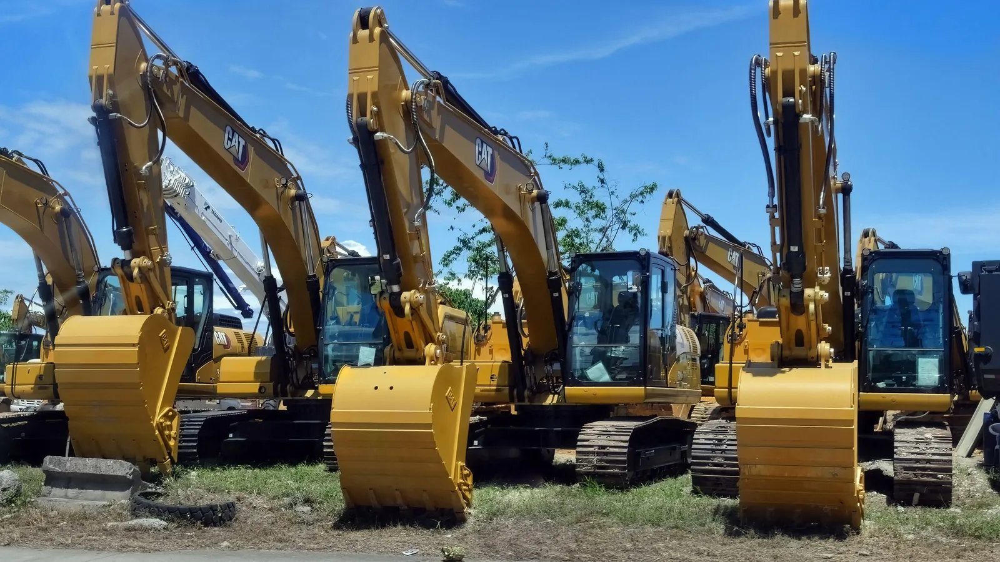
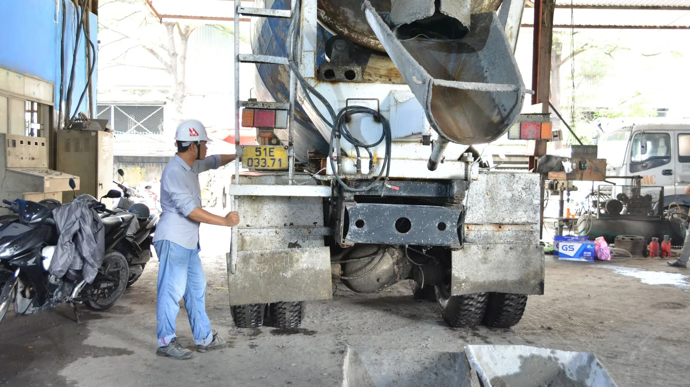

Rental software is starting to read return photos and flag the damage on its own. Billing gets faster. The first person to question the charge will be your customer, and your support team needs the evidence in hand when they call.

International Rental News interviewed Staedean, which builds equipment rental software on Microsoft Dynamics. Its chief product officer, Michiel Toppers, and product manager Anastasia van der Wielen walked through where they are putting AI: forecasting rental demand, planning the fleet, predicting when equipment will be free, and detecting damage by having a model look at photos of returned machines.
They were also candid about the limits. Their estimate is five to ten years before ERP work runs without people, and until then a person stays in the loop. That is an ordinary product roadmap from a mid-market vendor, and it is worth reading for what it says about where rental billing is heading.
Damage is the line on a rental invoice that customers argue with most. A contractor returns an excavator, and two weeks later a bill arrives for a cracked bucket tooth or a split seat. They call to ask what happened. Your rep then hunts for the return inspection and a folder of photos that may live in a different system from the contract, while the customer waits on hold and grows more sure they are being overcharged.
Automated damage detection makes that call more common. A model looking at every return photo will catch marks a busy yard hand would have let go, so more charges get raised. Some of them will be fair and some will be wear the customer reasonably thinks you should absorb. In rental, the customer who disputes a charge is usually a repeat account, so each badly handled dispute puts future rentals at risk, and those are worth far more than one bucket tooth.

The answer to a disputed charge is evidence, delivered fast. When the customer asks why they were billed, the best reply holds the checkout photo, the return photo, the inspection note, and the clause in their agreement that covers it. An agent can assemble that faster than a rep can open the folders.
CX-Builder can build that agent. It looks up the contract in your rental system, pulls the inspection records and photos for that machine, and retrieves the damage clause from the customer's own agreement instead of a generic policy page. It answers the question with the evidence attached, and it stops short of deciding. Any waiver, reduction, or goodwill credit goes to a person through an approval step, with the agent's summary already written so the review takes a minute. Setting that line by amount is the same idea we covered in the amount decides.
The agent should also say when the evidence is missing. If there is no checkout photo, it has no case to defend, and the right move is to hand the conversation to a person with that gap flagged at the top.
It is one agentflow. Tool calls fetch the contract, the inspection records and the photo links from the rental system's API. Rental agreements and the damage policy sit in a vector store so the agent quotes the clause that applies to this customer. A condition checks whether before and after evidence both exist, and routes the conversation to a person when either is missing. A human-in-the-loop node holds every proposed credit or waiver until someone approves it, and every answer is logged against the contract.
Detection and explanation can run in separate systems. All the agent needs is read access to what the detection step wrote down.
Pull ten damage disputes from last quarter and time how long it takes to find the checkout photo for each one. If it takes more than a minute, or the photo does not exist, fix capture at checkout before you switch on automated damage detection. Then put an agent in front of the dispute line that shows the evidence and leaves every credit to a person.